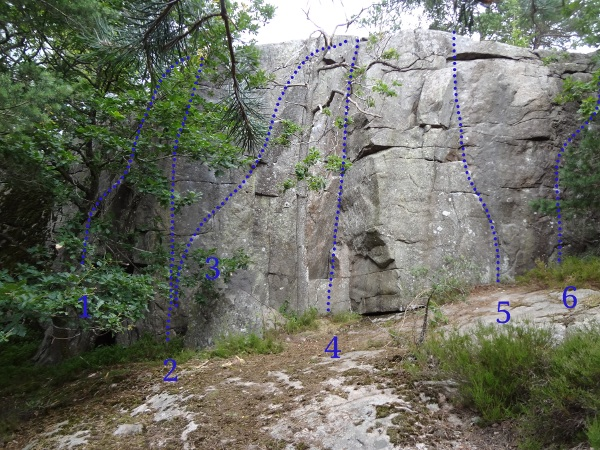

Lat: 57.74668 Long: 12.11109
<googlemap lat="57.74668" lon="12.11109" zoom="9" type="map"> 57.74668,12.11109,Hylteberget </googlemap>
Hylteberget är väl egentligen två områden. Dels Paradiset en bit längre in i skogen med korta enkla tradturer, dels Hylteberget, som är Göteborgs sportområde med många hårda långa leder (20 meter). En repsäck och låg ljudvolym krävs om du klättrar här. Parkera inte på parkeringen närmast klippan!
Tänk på ljudvolymen, sätt inte upp nya turer, parkera inte närmast klippan.
Paradiset, i Göteborgsföraren står det att det tillhör Hyltebergen, men får väl ses som en egen klippa. Ligger mitt emellan Hyltebergen och Ulvåsen. Kör Partille, sväng av Kung Göstas väg, kör under järnvägen och sväng upp på Paradisvägen. Håll vänster och stanna där Paradisvägen tar slut. Nu ser du en karta, med lite vandringsleder. Du ser en uppenbar stig åt vänster, en uppenbar stig åt höger. Följ grönvit stig rakt fram istället! Promenera en halv kilometer och klippan dyker upp på vänster sida.
Nästan alla leder är lätta, vertikala men ganska korta. Finns mycket träd att toppa ifrån. Var kreativ i utstegen, mycket jord och mossa här! Onödigt att förstöra den fina naturen..
Ligger bortanför Övre Hylte, för att hitta hit, gå förbi Övre hylte, när stigen delar på sig gå höger och gå mot där du ser sten. Alternativt gå förbi Harricot Vertes och vänster runt hörnet, och rakt fram cirka 70 meter.
Området efter plockepinn.
Följande leder ligger på en sektion mer åt höger och ligger i sol, jämnt.
Området nedanför Övrehylteberget ovanför Plockepinn. Lätt att sätta upp topprep på de flesta lederna, då de har lättåtkomliga topprepsankare. Som vanligt spara på bultarna och använd egna karbiner!
Ligger ovanför allting. Finns ett par topprepsvarianter på några av lederna också.
Vänster om området Forex, finns ofta is här på vintern. Ofta blött, juggig överhängande klättring
Området direkt vänster runt hörnet om området vid parkeringen. Forex är en klassisk led.
Området närmast parkeringen, parkera inte på parkeringen! Det har gjorts en hel del nya turer som behöver skrivas in här för att föraren skall vara komplett.
Följande leder ligger mer åt höger på en mycket brant klippa.
Kategori:Göteborg
Extern topo: